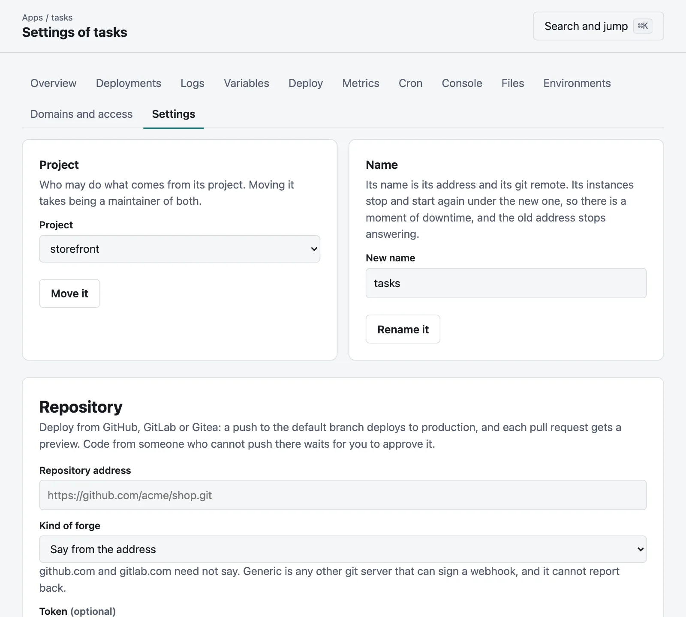
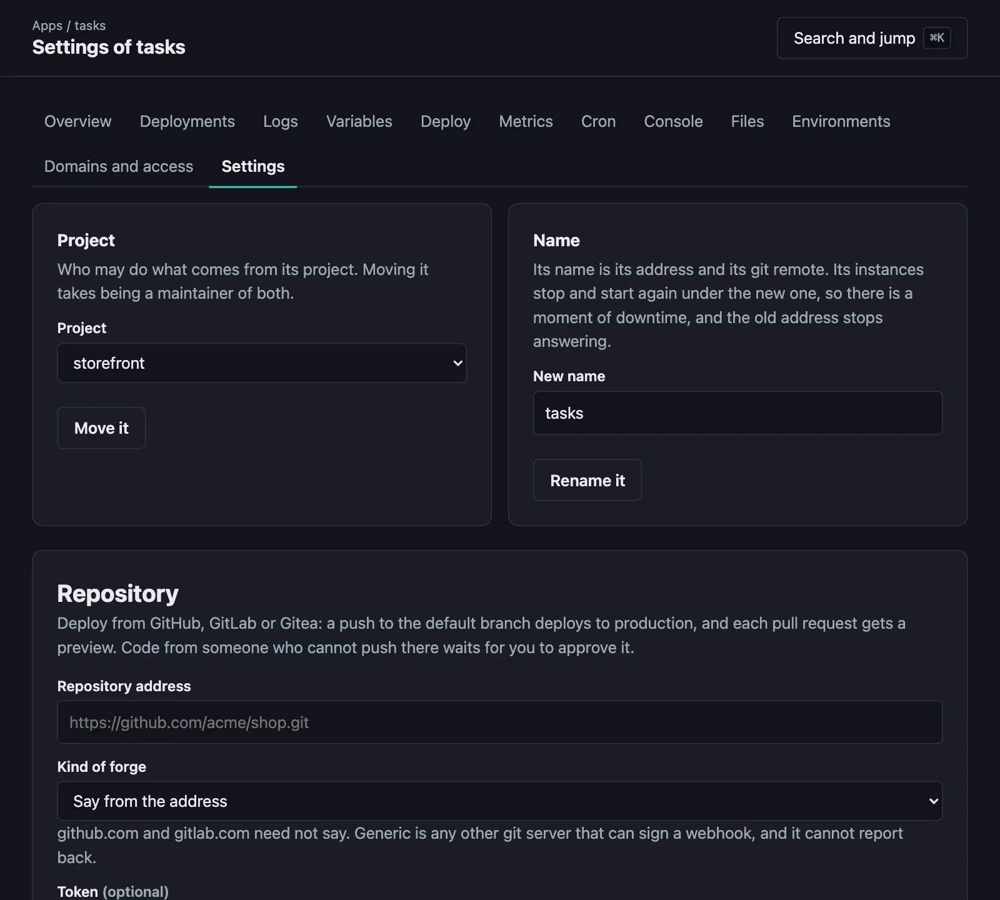

From GitHub, GitLab or Gitea
Connect a repository: a push deploys, and each pull request gets a preview.
On this page
Tested against stand-ins so far. This has run against test servers written to follow each forge's published API, and not yet against GitHub, GitLab or Gitea themselves. Trying it against them is the next thing on the roadmap. If you try it first, please say how it goes.
Connect an app to a repository on GitHub, GitLab or Gitea, and what happens there deploys here:
- A push to the default branch deploys to production.
- A push to a branch that an environment names deploys to that environment.
- Each pull request gets a preview of its own, which goes away when the pull request closes. If the server has a token, a check on the commit and one comment on the pull request say how that went, and where the preview is.
- A pull request from a fork, or from someone the forge does not say may push there, waits for someone to approve it.
Pushing to Moorage with git push goes on working, for whoever may. The next change on the forge to that branch takes its place, so it is simplest to choose one or the other for each app.
Connecting a repository#
Make the app, and connect it, from its folder or with --app:


moor forge connect does.moor apps create shopmoor forge connect https://github.com/acme/shop.git --token-stdin --app shopOr in the console, in the Repository section of the app's Settings. The repository is given by its https address, and the address of anything other than github.com or gitlab.com needs --kind gitea, --kind gitlab, --kind github or --kind generic to say what it is. The default branch, which deploys to production, is what the repository says, and follows it if that changes, unless --branch says which and keeps it there.
Connecting answers with an address and a secret, for the forge's webhook. The secret is shown this once. Connecting again to change something leaves both as they are; to have another secret, disconnect, connect, and give the forge the new ones.
Connecting deploys nothing. The next push does, or:
moor forge sync --app shopmoor forge says how the connection stands, including what went wrong with the last thing that it heard of.
The webhook#
| Forge | Where | What to set |
|---|---|---|
| GitHub | Repository, Settings, Webhooks | The address as the payload URL, application/json, the secret, and the events Pushes and Pull requests |
| GitLab | Project, Settings, Webhooks | The address as the URL, the secret as the secret token, and the triggers Push events and Merge request events |
| Gitea | Repository, Settings, Webhooks | The address as the target URL, application/json, the secret, and the events Push and Pull Request |
The forge has to be able to reach the server's console hostname. If it cannot, see looking for changes.
The token#
Without a token, Moorage can read a public repository and deploy from it, and it says nothing back. A token reads a private repository, and sets the checks and comments. It is kept sealed, and is not shown again.
| Forge | What it needs |
|---|---|
| GitHub | A fine-grained token for the repository: Contents to read, Commit statuses and Pull requests to read and write |
| GitLab | A project access token with the api scope, as a Developer |
| Gitea | A token with read:repository, write:repository and write:issue |
A token only goes to the forge it was given for. Changing the repository's address, or --api-url, without giving a token again leaves the connection with none. Nor is a token sent in the clear across the internet: an address that is not https has to be on the local network for one to be accepted. A repository that has been renamed has to be connected again by its new address, as a forge sends anything else there by a redirect, which this server does not follow.
A forge of your own#
For a forge at its own hostname, --kind says which kind it is, and its API is expected where that kind's API usually is. --api-url says otherwise, and a token is held to the same for it. --kind generic is any git server that can sign a webhook: it sends JSON with ref and after or commit, and an HMAC-SHA256 of the body, in hexadecimal, in X-Moorage-Signature. It has no pull requests, and nothing to report back to.
Moorage reaches a forge as it reaches a webhook, so an address on this machine or a link-local one is refused unless [notifications] allow names it.
Pull requests#
A pull request's preview is an environment named after its number, such as pr-42, at an address of its own. Its checks are called moorage, which a branch protection rule can require. Each new commit takes the place of the last, and the same comment says so. Closing the pull request or merging it takes the preview away.
With a connection that hears of pull requests, branches do not get previews for being pushed, as what is in a pull request would be built twice. --no-previews leaves pull requests alone, and then only the default branch and those that an environment names deploy.
A pull request's manifest has no say in where it goes: naming an environment for itself would not take it there, and [previews] branches is about branches. It can have no preview, with [previews] enabled = false, [skip deploy] or [app].watch, and it can say who may reach its preview with [previews] access, as any commit's manifest can.
moor forge pulls --app shopCode from strangers#
Building a pull request runs its code on this server, and its preview has the app's variables for previews. So one is not built for being opened if it comes from a fork, or if the forge does not say that its author may work there. On GitHub that means an owner, a member or a collaborator. A private member of an organization looks to the server like anyone else, and has to be approved or make their membership public. On GitLab and Gitea, anything in the repository itself counts, as pushing there took being allowed to.
It waits, with a check and a comment to say so, and Moorage does not fetch its code. A maintainer of the app's project can look at it, and then approve it, on the app's Settings page, or with:
moor forge approve 42 1f3a9c07 --app shopYou say which commit you looked at, as moor forge pulls shows it, and the console's button says the same. That is for that commit. If the pull request has moved on by then, nothing is built, and you are told. Another commit waits again, and what it has moved on to while it was being fetched is not built either. Who approved which commit is in the audit log.
Before approving, read what it changes, including its manifest and anything that its build runs. Its preview runs with a user of its own only where isolation does that, so on a server without isolation, it can reach whatever the server can. For that reason, keep what previews are given to what a stranger could see, or leave previews off where the repository is open to everyone.
Anyone who can push to the repository can deploy this app, as a connection means trusting the forge's word. A branch's own manifest can name an environment for it. If that is more than you would like, protect the branches there.
Looking for changes#
A server that a forge cannot reach, behind a firewall, say, can look for itself:
moor forge connect https://github.com/acme/shop.git --poll --app shopIt then looks every minute, and needs no webhook. The first look deploys the default branch, and leaves the branches that are already there. After that, a changed branch does what a push of it here would do, which includes a preview if its manifest allows one, and a branch that goes away takes its preview with it. It sees no pull requests, so none of them get previews or wait for approval.
What fails is not tried again until something changes. moor forge sync, or Look now in the console, tries again, and takes the default branch to where the repository has it, whatever may have been pushed to this server since.
When the server has been away#
A forge does not tell a server of a push twice. So a server starting looks at each repository that it has heard from before, and deploys what changed while it was gone. What failed before it stopped is not tried again, and what someone has pushed to this server itself stays. That goes for branches. A pull request that changed then is seen to at its next event, which a push or closing it and opening it again will bring about. A check left saying that something was under way when the server stopped says that it failed.
Letting go#
moor forge disconnect --app shopThis forgets the address, secret and token. What it deployed stays, previews too, and they can be removed by hand. The webhook on the forge can go, as it now gets a 404.